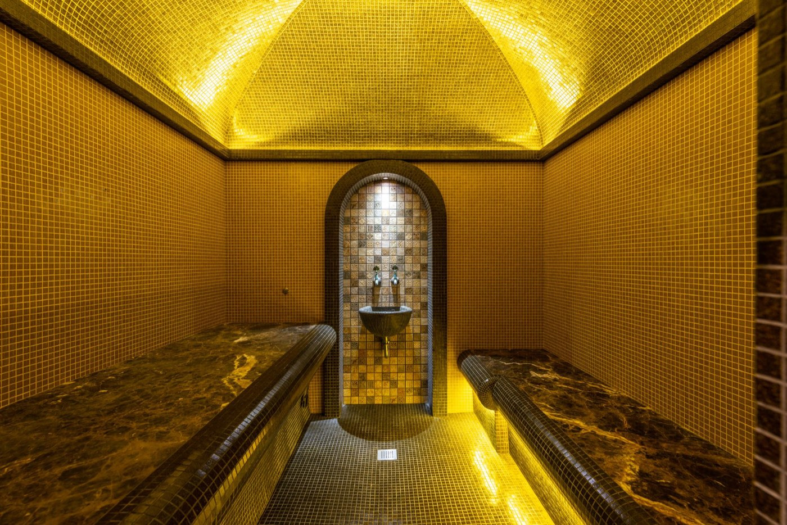

Circuit accompagné
Sur les routes du Maroc
Marrakech, Casablanca, Rabat, Fès, le Sahara et l'Atlas, avec guide accompagnateur et vols depuis Genève.
Des itinéraires que nous avons construits et que nous connaissons. Filtrez par formule, durée, budget ou mois de départ. Et si rien ne correspond exactement, le sur mesure commence par un devis.
Marrakech, Casablanca, Rabat, Fès, le Sahara et l'Atlas, avec guide accompagnateur et vols depuis Genève.

Casablanca, Rabat, Meknès, Volubilis, Fès et Marrakech, avec guide et transferts privés.

De Tanger à Marrakech par Chefchaouen, Fès, Merzouga et la vallée du Drâa, avec une nuit sous tente.

Les cités impériales, Chefchaouen et l'éclipse totale du 2 août 2027 vécue depuis Tanger.

Le même voyage en véhicule privé, à votre rythme, de Marrakech à Tanger.

Grande villa privée de luxe, un guide pour la médina, les jardins et les souks, et du temps pour vous.

Sept nuits dans un écolodge au pied de l'Atlas : hammam, massages, marches dans la palmeraie et cuisine du jardin.
Un itinéraire construit autour de vos envies, de vos dates et de votre budget, avec notre équipe au Maroc.
Sur les routes du Maroc : prix par personne en chambre double, vols Genève - Marrakech inclus. Circuits Éclipse : exemple de prix, base 2 participants, hors vols internationaux. Séjour bien-être : prix par personne, hors vol. Les voyages privés sont établis sur devis. Le détail de ce que chaque prix comprend figure sur la fiche du voyage.